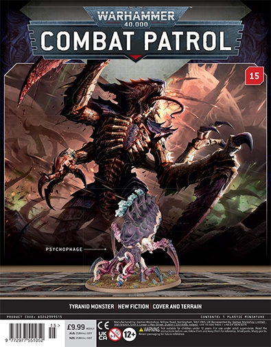

Combat Patrol Magazine 15 - Psychophage
Psychophage
The Psychophage is a specialized Tyranid bioform designed to counter and consume psychic threats within the galaxy. This monstrous creature is equipped with a unique digestive tract capable of metabolizing psychic lifeforms into a devastating psychocorrosive ash. This ash is then projected forward in blistering torrents, which are said to deflagrate, or burn away, both the minds and souls of its victims.
While the Psychophage will devour any organism in its path, it particularly favors prey with psychic abilities, such as Space Marine Librarians, Weirdboys, Farseers, and Infernal Masters. Despite its considerable bulk, the Psychophage is deceptively fast, making it a terrifyingly agile threat on the battlefield. Its most prominent features include a gaping maw surrounded by a mass of whipping tentacles, specifically adapted to strip the mind from psykers before they can retaliate.
Build Instructions
The instructions can be found here for the Psychophage.